features.4 unit 46: banded (texture, 0.195748); curtain (object, 0.018013); closet-s (scene, 0.010308); red-c (color, 0.009570); door frame (part, 0.008055); fabric (material, 0.007399)
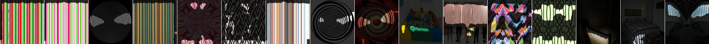
features.4 unit 139: banded (texture, 0.169525); skyscraper (object, 0.038619); skyscraper-s (scene, 0.024762); red-c (color, 0.008342); pane (part, 0.007241); glass (material, 0.004195)
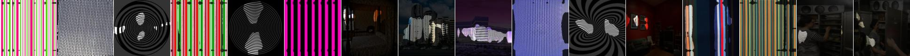
features.4 unit 62: banded (texture, 0.157613); bus (object, 0.015531); bow_window-outdoor-s (scene, 0.015217); pane (part, 0.009915); white-c (color, 0.009523); glass (material, 0.007517)
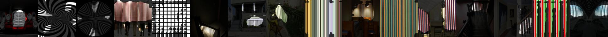
features.4 unit 105: zigzagged (texture, 0.137714); track (object, 0.013274); atrium-public-s (scene, 0.011073); wheel (part, 0.009476); metal (material, 0.009394); white-c (color, 0.007393)
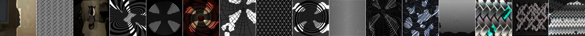
features.4 unit 79: lined (texture, 0.118180); crosswalk (part, 0.016705); road (object, 0.014359); white-c (color, 0.007644); staircase-s (scene, 0.006814); metal (material, 0.006345)
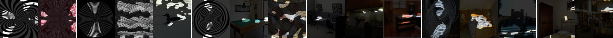
features.4 unit 35: banded (texture, 0.112476); body (part, 0.014236); airplane (object, 0.010598); moon_bounce-s (scene, 0.009166); white-c (color, 0.006669); ceramic (material, 0.005391)
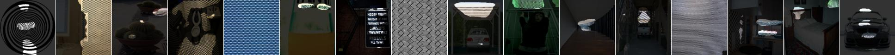
features.4 unit 32: grid (texture, 0.112345); skyscraper (object, 0.022911); building_facade-s (scene, 0.018025); white-c (color, 0.010065); crosswalk (part, 0.009636); plastic-opaque (material, 0.007104)
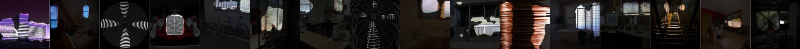
features.4 unit 167: zigzagged (texture, 0.111414); red-c (color, 0.016428); ball_pit-s (scene, 0.013274); metal (material, 0.007614); table (object, 0.007310); arm (part, 0.004499)
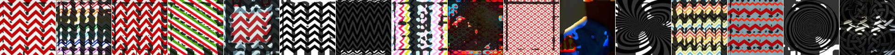
features.4 unit 129: perforated (texture, 0.108274); white-c (color, 0.009960); wheel (part, 0.009673); skyscraper-s (scene, 0.008108); skyscraper (object, 0.006131); tile (material, 0.002045)
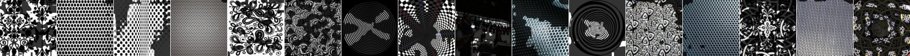
features.4 unit 69: zigzagged (texture, 0.101498); ball_pit-s (scene, 0.017623); ball (object, 0.008873); wheel (part, 0.007929); yellow-c (color, 0.006840); metal (material, 0.005297)
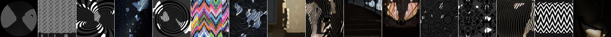
features.4 unit 161: banded (texture, 0.100600); ceiling (object, 0.010238); white-c (color, 0.009114); painted (material, 0.006212); coast-s (scene, 0.005496); crosswalk (part, 0.005283)
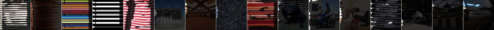
features.4 unit 124: lined (texture, 0.097659); sky (object, 0.018652); white-c (color, 0.012551); crosswalk (part, 0.008336); skyscraper-s (scene, 0.006951); plastic-opaque (material, 0.005133)
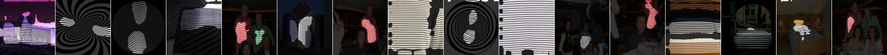
features.4 unit 165: banded (texture, 0.097167); curtain (object, 0.009056); red-c (color, 0.008396); ball_pit-s (scene, 0.007800); hair (part, 0.004634); metal (material, 0.004444)
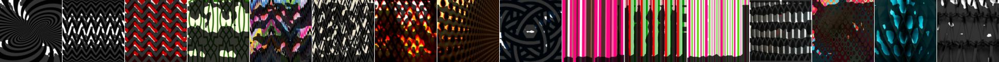
features.4 unit 56: lacelike (texture, 0.094722); art_school-s (scene, 0.018170); wheel (part, 0.013218); motorbike (object, 0.012173); white-c (color, 0.011070); metal (material, 0.001749)
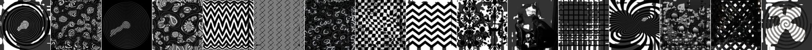
features.4 unit 184: perforated (texture, 0.087003); cradle (object, 0.012371); bank-outdoor-s (scene, 0.009295); red-c (color, 0.007758); body (part, 0.004383); food (material, 0.003643)
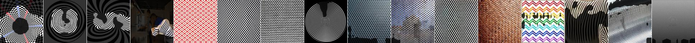
features.4 unit 157: grid (texture, 0.080084); skyscraper (object, 0.016688); skyscraper-s (scene, 0.014493); white-c (color, 0.014473); headboard (part, 0.005010); plastic-opaque (material, 0.003066)
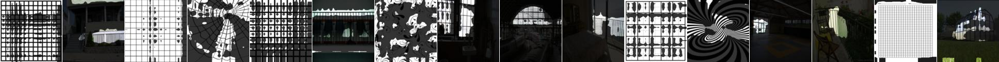
features.4 unit 175: veined (texture, 0.078901); red-c (color, 0.023802); ball_pit-s (scene, 0.021940); grass (object, 0.021796); food (material, 0.008003); body (part, 0.006379)
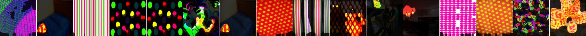
features.4 unit 85: striped (texture, 0.073987); wheel (part, 0.017303); bicycle (object, 0.012775); closet-s (scene, 0.007360); white-c (color, 0.006517); metal (material, 0.004616)
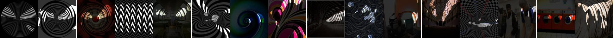
features.4 unit 63: lacelike (texture, 0.072656); wheel (part, 0.014931); white-c (color, 0.013306); mountain_snowy-s (scene, 0.012687); motorbike (object, 0.012140); glass (material, 0.001336)
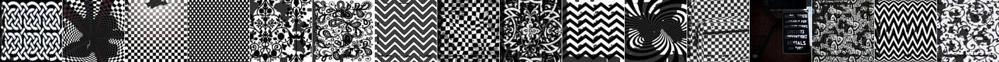
features.4 unit 98: striped (texture, 0.070945); wheel (part, 0.012057); escalator-outdoor-s (scene, 0.009363); bicycle (object, 0.008744); white-c (color, 0.007679); metal (material, 0.006438)
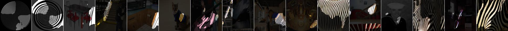
features.4 unit 177: red-c (color, 0.069217); dotted (texture, 0.024657); fabric (material, 0.014434); bed (object, 0.011512); arm (part, 0.009823); poolroom-home-s (scene, 0.008190)
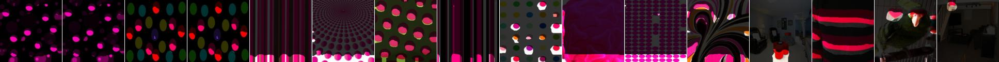
features.4 unit 110: perforated (texture, 0.068307); skyscraper (object, 0.022378); skyscraper-s (scene, 0.016982); wheel (part, 0.009641); white-c (color, 0.007127); wallpaper (material, 0.003102)
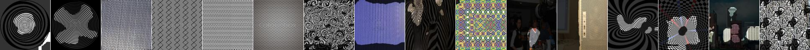
features.4 unit 141: striped (texture, 0.068167); subway_station-corridor-s (scene, 0.009713); wheel (part, 0.009487); bicycle (object, 0.008956); metal (material, 0.006732); red-c (color, 0.006242)
features.4 unit 36: zigzagged (texture, 0.067794); wheel (part, 0.013812); motorbike (object, 0.009830); metal (material, 0.006743); red-c (color, 0.005999); staircase-s (scene, 0.004934)
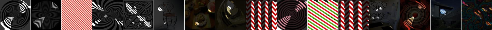
features.4 unit 122: grass (object, 0.066949); green-c (color, 0.034138); zigzagged (texture, 0.029086); ball_pit-s (scene, 0.017464); food (material, 0.006782); body (part, 0.003984)
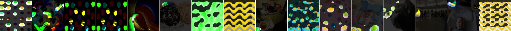
features.4 unit 5: banded (texture, 0.066581); sidewalk (object, 0.011541); building_facade-s (scene, 0.008078); white-c (color, 0.007185); ceramic (material, 0.005946); screen (part, 0.005660)
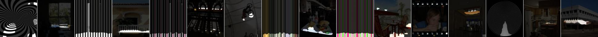
features.4 unit 66: striped (texture, 0.066316); ball_pit-s (scene, 0.008892); cat (object, 0.007565); metal (material, 0.007466); crosswalk (part, 0.006540); white-c (color, 0.006122)
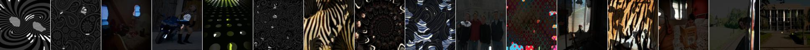
features.4 unit 19: sky (object, 0.064970); blue-c (color, 0.033311); highway-s (scene, 0.025803); (texture, 0.006835); painted (material, 0.003377); torso (part, 0.001148)
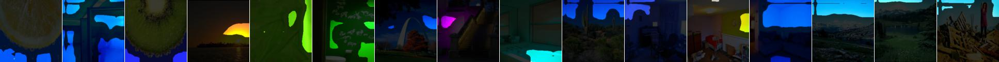
features.4 unit 118: perforated (texture, 0.063678); wheel (part, 0.014125); car (object, 0.013960); white-c (color, 0.007883); building_facade-s (scene, 0.007457); glass (material, 0.003123)
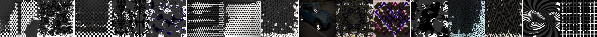
features.4 unit 37: ball_pit-s (scene, 0.061265); zigzagged (texture, 0.049101); red-c (color, 0.039387); ball (object, 0.026423); food (material, 0.010941); arm (part, 0.010229)
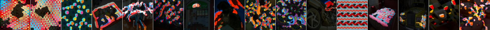
features.4 unit 87: banded (texture, 0.061062); closet-s (scene, 0.008514); curtain (object, 0.008392); red-c (color, 0.006250); glass (material, 0.003831); headboard (part, 0.003810)
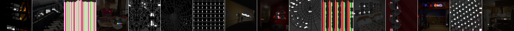
features.4 unit 73: zigzagged (texture, 0.060074); track (object, 0.011078); fire_escape-s (scene, 0.008481); metal (material, 0.008192); coach (part, 0.007566); white-c (color, 0.007146)
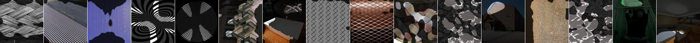
features.4 unit 131: polka-dotted (texture, 0.058014); red-c (color, 0.027001); signboard (object, 0.007633); headboard (part, 0.006856); circus_tent-outdoor-s (scene, 0.006206); fabric (material, 0.004946)
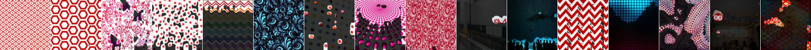
features.4 unit 40: lacelike (texture, 0.057726); white-c (color, 0.014369); crosswalk (part, 0.013690); road (object, 0.012789); mountain_snowy-s (scene, 0.010746); paper (material, 0.003966)
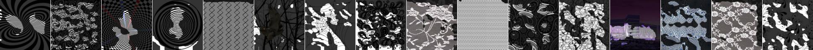
features.4 unit 21: paisley (texture, 0.056259); ball_pit-s (scene, 0.047352); ball (object, 0.021997); blue-c (color, 0.013491); fabric (material, 0.008160); arm (part, 0.005195)
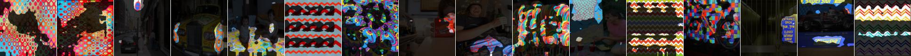
features.4 unit 182: meshed (texture, 0.055979); track (object, 0.015809); crosswalk (part, 0.010194); train_station-outdoor-s (scene, 0.009205); red-c (color, 0.007204); metal (material, 0.004535)
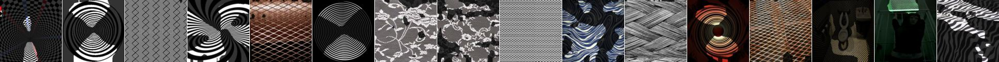
features.4 unit 116: striped (texture, 0.055100); subway_station-corridor-s (scene, 0.009135); red-c (color, 0.008915); curtain (object, 0.007680); metal (material, 0.005362); arm (part, 0.004428)
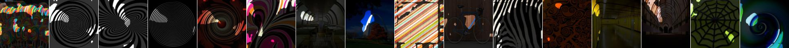
features.4 unit 123: knitted (texture, 0.054382); purple-c (color, 0.047800); person (object, 0.015340); arm (part, 0.011488); wine_cellar-bottle_storage-s (scene, 0.010224); fabric (material, 0.008390)
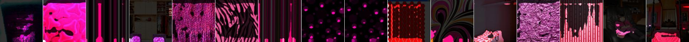
features.4 unit 12: red-c (color, 0.054318); dotted (texture, 0.035358); flower (object, 0.015782); ball_pit-s (scene, 0.012361); arm (part, 0.009080); fabric (material, 0.008303)
features.4 unit 84: chequered (texture, 0.054015); white-c (color, 0.007153); glass (material, 0.005192); windowpane (object, 0.005088); screen (part, 0.004512); youth_hostel-s (scene, 0.004441)
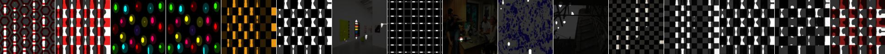
features.4 unit 57: striped (texture, 0.053193); ball_pit-s (scene, 0.027226); ball (object, 0.013410); food (material, 0.009670); red-c (color, 0.009388); eye (part, 0.004743)
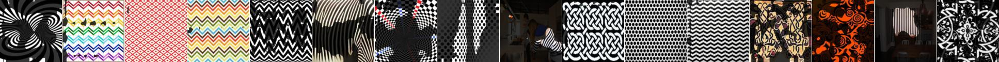
features.4 unit 109: perforated (texture, 0.052736); hair (part, 0.015237); person (object, 0.009984); black-c (color, 0.005801); subway_interior-s (scene, 0.004504); skin (material, 0.003283)
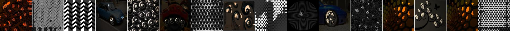
features.4 unit 65: banded (texture, 0.052659); white-c (color, 0.007698); metal (material, 0.005992); chair (object, 0.005412); arm (part, 0.005082); closet-s (scene, 0.004749)
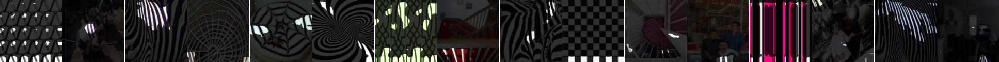
features.4 unit 162: plant (object, 0.051711); veined (texture, 0.042905); forest-broadleaf-s (scene, 0.036294); green-c (color, 0.035610); food (material, 0.007990); wheel (part, 0.003569)
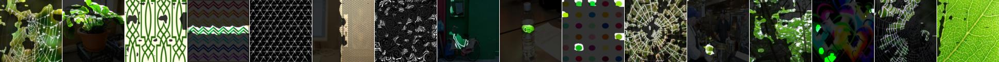
features.4 unit 27: red-c (color, 0.051642); ball_pit-s (scene, 0.038515); dotted (texture, 0.030215); ball (object, 0.016058); arm (part, 0.012009); fabric (material, 0.010260)
features.4 unit 152: banded (texture, 0.047807); curtain (object, 0.018422); hair (part, 0.007571); glass (material, 0.007078); fence-s (scene, 0.006530); white-c (color, 0.006244)
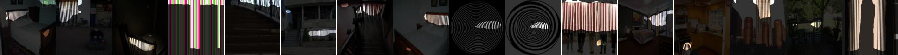
features.4 unit 78: banded (texture, 0.047298); painting (object, 0.015025); skyscraper-s (scene, 0.009007); glass (material, 0.007108); red-c (color, 0.006022); pane (part, 0.004128)

features.4 unit 119: sky (object, 0.046890); blue-c (color, 0.040853); skyscraper-s (scene, 0.015915); screen (part, 0.008935); (texture, 0.006924); glass (material, 0.005094)
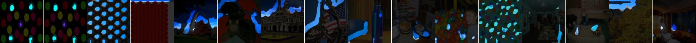
features.4 unit 2: striped (texture, 0.046680); wheel (part, 0.018729); bicycle (object, 0.015439); office_building-s (scene, 0.007253); metal (material, 0.005401); white-c (color, 0.005194)
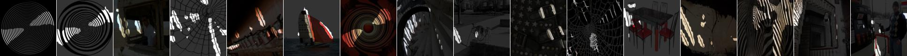
features.4 unit 68: crosshatched (texture, 0.044649); forest-broadleaf-s (scene, 0.019885); skyscraper (object, 0.018302); roof (part, 0.009352); pink-c (color, 0.006205); carpet (material, 0.003117)
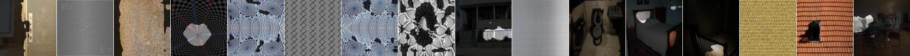
features.4 unit 4: perforated (texture, 0.044529); wheel (part, 0.010868); motorbike (object, 0.010768); wine_cellar-bottle_storage-s (scene, 0.006885); purple-c (color, 0.005542); food (material, 0.003002)
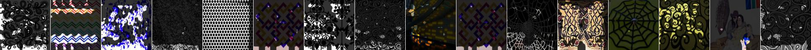
features.4 unit 60: banded (texture, 0.043016); orange-c (color, 0.020792); wood (material, 0.016563); sky (object, 0.013428); kitchen-s (scene, 0.009850); arm (part, 0.004481)
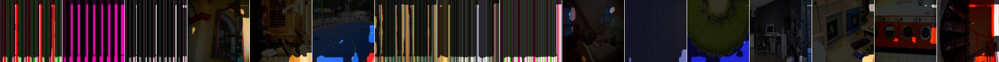
features.4 unit 33: perforated (texture, 0.042515); car (object, 0.013216); building_facade-s (scene, 0.011154); roof (part, 0.009876); black-c (color, 0.005281); metal (material, 0.003127)
features.4 unit 181: grass (object, 0.042246); green-c (color, 0.031810); veined (texture, 0.026683); ball_pit-s (scene, 0.015165); food (material, 0.008649); body (part, 0.005730)
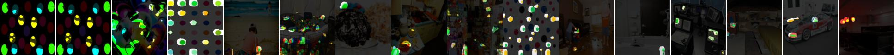
features.4 unit 16: striped (texture, 0.041675); platform (object, 0.009375); white-c (color, 0.007597); wheel (part, 0.007453); fabric (material, 0.005440); attic-s (scene, 0.005085)
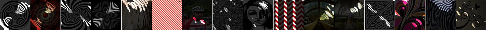
features.4 unit 7: purple-c (color, 0.041491); banded (texture, 0.038738); person (object, 0.011638); arm (part, 0.010166); airport_terminal-s (scene, 0.009355); fabric (material, 0.009242)
features.4 unit 192: banded (texture, 0.041367); ball_pit-s (scene, 0.015814); yellow-c (color, 0.009552); painted (material, 0.009547); ball (object, 0.006734); screen (part, 0.003852)
features.4 unit 54: striped (texture, 0.040678); white-c (color, 0.008604); painted (material, 0.006930); closet-s (scene, 0.006894); curtain (object, 0.006700); wheel (part, 0.003647)
features.4 unit 113: red-c (color, 0.037842); honeycombed (texture, 0.017672); ball_pit-s (scene, 0.012780); bus (object, 0.008369); food (material, 0.007752); body (part, 0.006720)
features.4 unit 146: sky (object, 0.037318); white-c (color, 0.025989); zigzagged (texture, 0.025876); street-s (scene, 0.008900); glass (material, 0.003996); cloud (part, 0.003574)
features.4 unit 130: grooved (texture, 0.037236); track (object, 0.012522); coach (part, 0.010837); metal (material, 0.008961); escalator-indoor-s (scene, 0.008484); white-c (color, 0.005725)
features.4 unit 149: crosshatched (texture, 0.037228); skyscraper (object, 0.025129); skyscraper-s (scene, 0.015927); plastic-opaque (material, 0.006766); red-c (color, 0.006765); roof (part, 0.006515)
features.4 unit 154: zigzagged (texture, 0.036517); wheel (part, 0.017527); motorbike (object, 0.011586); ceramic (material, 0.008202); white-c (color, 0.005721); conference_room-s (scene, 0.003850)
features.4 unit 28: zigzagged (texture, 0.036089); wheel (part, 0.010072); motorbike (object, 0.008189); metal (material, 0.007740); white-c (color, 0.006297); airport_terminal-s (scene, 0.003984)
features.4 unit 34: zigzagged (texture, 0.035695); white-c (color, 0.014327); motorbike (object, 0.006180); ball_pit-s (scene, 0.005636); glass (material, 0.004811); arm (part, 0.004665)
features.4 unit 155: fibrous (texture, 0.035415); orange-c (color, 0.022294); anechoic_chamber-s (scene, 0.009463); food (material, 0.007247); chair (object, 0.006795); hand (part, 0.005167)
features.4 unit 156: zigzagged (texture, 0.035069); wheel (part, 0.011845); car (object, 0.009631); white-c (color, 0.006022); amphitheater-s (scene, 0.005494); metal (material, 0.005298)
features.4 unit 111: swirly (texture, 0.035044); ball_pit-s (scene, 0.030627); yellow-c (color, 0.017944); ball (object, 0.012502); body (part, 0.007434); glass (material, 0.005080)
features.4 unit 174: red-c (color, 0.034430); wrinkled (texture, 0.014490); movie_theater-indoor-s (scene, 0.010196); fabric (material, 0.008305); sofa (object, 0.006530); body (part, 0.004892)
features.4 unit 75: zigzagged (texture, 0.033814); motorbike (object, 0.009122); wheel (part, 0.005556); red-c (color, 0.005530); ball_pit-s (scene, 0.004948); food (material, 0.002208)
features.4 unit 176: perforated (texture, 0.033550); skyscraper (object, 0.007409); body (part, 0.007176); skyscraper-s (scene, 0.006847); white-c (color, 0.006337); fabric (material, 0.004422)
features.4 unit 104: chequered (texture, 0.033347); white-c (color, 0.012227); ceramic (material, 0.007814); floor (object, 0.006296); art_gallery-s (scene, 0.006002); arm (part, 0.005113)
features.4 unit 14: striped (texture, 0.032537); mountain_snowy-s (scene, 0.017141); yellow-c (color, 0.013072); mountain (object, 0.010028); body (part, 0.007209); glass (material, 0.003542)
features.4 unit 6: grass (object, 0.032290); green-c (color, 0.014909); veined (texture, 0.014674); forest-broadleaf-s (scene, 0.011845); food (material, 0.004984); wheel (part, 0.002922)
features.4 unit 93: chequered (texture, 0.032157); orange-c (color, 0.008717); ball_pit-s (scene, 0.007152); table (object, 0.004735); wood (material, 0.004717); screen (part, 0.004162)
features.4 unit 39: meshed (texture, 0.031318); ceiling (object, 0.011700); mountain_snowy-s (scene, 0.010551); black-c (color, 0.005581); roof (part, 0.003919); metal (material, 0.003753)
features.4 unit 29: zigzagged (texture, 0.031272); white-c (color, 0.013738); windowpane (object, 0.008334); glass (material, 0.007266); shade (part, 0.005268); staircase-s (scene, 0.004657)
features.4 unit 180: sky (object, 0.030909); white-c (color, 0.012958); painted (material, 0.008561); mountain_snowy-s (scene, 0.007234); (texture, 0.004411); screen (part, 0.002158)
features.4 unit 17: chequered (texture, 0.030734); screen (part, 0.009966); black-c (color, 0.009484); computer (object, 0.009240); glass (material, 0.008204); office-s (scene, 0.005411)
features.4 unit 48: lined (texture, 0.030018); crosswalk (part, 0.010770); car (object, 0.010503); white-c (color, 0.006096); plastic-opaque (material, 0.005772); airport_terminal-s (scene, 0.005757)
features.4 unit 147: zigzagged (texture, 0.028896); red-c (color, 0.014747); motorbike (object, 0.014589); ball_pit-s (scene, 0.013861); wheel (part, 0.010116); fabric (material, 0.003890)
features.4 unit 13: banded (texture, 0.028745); windowpane (object, 0.010014); white-c (color, 0.007688); closet-s (scene, 0.007165); door frame (part, 0.005619); glass (material, 0.004980)
features.4 unit 127: red-c (color, 0.028705); chequered (texture, 0.019655); wine_cellar-bottle_storage-s (scene, 0.012535); hair (part, 0.009945); ceiling (object, 0.006336); wood (material, 0.005144)
features.4 unit 142: dotted (texture, 0.028535); wheel (part, 0.019648); motorbike (object, 0.010786); white-c (color, 0.004345); cockpit-s (scene, 0.004061); ceramic (material, 0.003814)
features.4 unit 168: swirly (texture, 0.027631); wheel (part, 0.023759); motorbike (object, 0.014394); white-c (color, 0.004961); ceramic (material, 0.004932); laundromat-s (scene, 0.004544)
features.4 unit 9: striped (texture, 0.027260); track (object, 0.009589); metal (material, 0.007529); roof (part, 0.005746); white-c (color, 0.005676); archive-s (scene, 0.005102)
features.4 unit 23: orange-c (color, 0.027058); dotted (texture, 0.013157); ball_pit-s (scene, 0.011449); bus (object, 0.010441); food (material, 0.007067); wheel (part, 0.005532)
features.4 unit 94: blue-c (color, 0.026835); dotted (texture, 0.022002); pool table (object, 0.017459); screen (part, 0.016310); ball_pit-s (scene, 0.015452); glass (material, 0.006550)
features.4 unit 52: chequered (texture, 0.026602); hair (part, 0.014347); black-c (color, 0.012276); person (object, 0.009385); fabric (material, 0.006062); home_theater-s (scene, 0.005715)
features.4 unit 169: dotted (texture, 0.025820); wheel (part, 0.012164); car (object, 0.009145); red-c (color, 0.004471); laundromat-s (scene, 0.004011); glass (material, 0.002791)
features.4 unit 26: cobwebbed (texture, 0.025619); railing (object, 0.013741); wheel (part, 0.010646); office_building-s (scene, 0.008997); pink-c (color, 0.005666); metal (material, 0.004533)
features.4 unit 108: perforated (texture, 0.025528); painting (object, 0.004776); white-c (color, 0.004302); living_room-s (scene, 0.004118); eye (part, 0.003766); carpet (material, 0.002596)
features.4 unit 126: zigzagged (texture, 0.025360); yellow-c (color, 0.015351); food (material, 0.009940); headboard (part, 0.008558); dining_room-s (scene, 0.008411); lamp (object, 0.007137)
features.4 unit 153: lined (texture, 0.025145); track (object, 0.011161); office_building-s (scene, 0.007540); coach (part, 0.007114); metal (material, 0.007023); white-c (color, 0.005512)
features.4 unit 15: swirly (texture, 0.025093); red-c (color, 0.019289); grass (object, 0.012477); carpet (material, 0.007720); wheel (part, 0.007532); field-cultivated-s (scene, 0.006162)
features.4 unit 114: lined (texture, 0.024955); car (object, 0.010583); wheel (part, 0.007979); building_facade-s (scene, 0.006018); white-c (color, 0.005723); metal (material, 0.004325)
features.4 unit 1: polka-dotted (texture, 0.024347); car (object, 0.007916); wheel (part, 0.006565); white-c (color, 0.005159); skyscraper-s (scene, 0.004399); glass (material, 0.003122)
features.4 unit 150: cobwebbed (texture, 0.023945); wheel (part, 0.017728); black-c (color, 0.013997); forest-broadleaf-s (scene, 0.013412); motorbike (object, 0.013029); carpet (material, 0.002451)
features.4 unit 159: blue-c (color, 0.023818); zigzagged (texture, 0.012371); ball_pit-s (scene, 0.011380); screen (part, 0.010729); mountain (object, 0.009645); plastic-opaque (material, 0.005273)
features.4 unit 8: bubbly (texture, 0.023783); skyscraper-s (scene, 0.017024); blue-c (color, 0.014113); skyscraper (object, 0.008028); torso (part, 0.005929); fabric (material, 0.004304)
features.4 unit 45: swirly (texture, 0.023750); bus (object, 0.012046); body (part, 0.010627); building_facade-s (scene, 0.008072); white-c (color, 0.005826); glass (material, 0.005102)
features.4 unit 61: chequered (texture, 0.023678); black-c (color, 0.004397); hair (part, 0.003724); chair (object, 0.003452); conference_room-s (scene, 0.003066); metal (material, 0.002765)
features.4 unit 186: ground (object, 0.023618); paisley (texture, 0.022081); carpet (material, 0.019076); building_facade-s (scene, 0.011493); pink-c (color, 0.011158); crosswalk (part, 0.009326)
features.4 unit 99: chequered (texture, 0.023591); airplane (object, 0.006135); red-c (color, 0.005845); body (part, 0.005750); wood (material, 0.003120); hotel_room-s (scene, 0.002576)
features.4 unit 160: striped (texture, 0.023364); wheel (part, 0.017900); bicycle (object, 0.015528); subway_station-corridor-s (scene, 0.005441); white-c (color, 0.005347); metal (material, 0.005338)
features.4 unit 133: paisley (texture, 0.023195); tree (object, 0.016260); green-c (color, 0.010400); street-s (scene, 0.009952); wheel (part, 0.003861); glass (material, 0.003798)
features.4 unit 188: lined (texture, 0.023047); red-c (color, 0.018409); road (object, 0.012054); building_facade-s (scene, 0.008093); body (part, 0.007380); fabric (material, 0.004982)
features.4 unit 95: studded (texture, 0.023011); ceiling (object, 0.004835); casino-indoor-s (scene, 0.004299); black-c (color, 0.003313); wheel (part, 0.002743); metal (material, 0.002126)
features.4 unit 140: yellow-c (color, 0.022928); zigzagged (texture, 0.021430); grass (object, 0.013560); childs_room-s (scene, 0.008368); wood (material, 0.006706); body (part, 0.002217)
features.4 unit 135: lacelike (texture, 0.022906); wheel (part, 0.011590); yellow-c (color, 0.011180); motorbike (object, 0.008390); airport_terminal-s (scene, 0.005055); metal (material, 0.004122)
features.4 unit 38: banded (texture, 0.022676); windowpane (object, 0.011973); building_facade-s (scene, 0.008451); white-c (color, 0.007300); glass (material, 0.006959); pane (part, 0.006551)
features.4 unit 74: striped (texture, 0.022487); black-c (color, 0.007504); floor (object, 0.007192); torso (part, 0.006380); fabric (material, 0.005973); bedroom-s (scene, 0.003985)
features.4 unit 145: zigzagged (texture, 0.021458); leg (part, 0.016341); floor (object, 0.015924); red-c (color, 0.011590); carpet (material, 0.010844); dining_room-s (scene, 0.010698)
features.4 unit 106: lacelike (texture, 0.021410); skyscraper-s (scene, 0.016828); tree (object, 0.013939); green-c (color, 0.006882); wheel (part, 0.005672); wallpaper (material, 0.002352)
features.4 unit 10: hand (part, 0.020589); orange-c (color, 0.020442); person (object, 0.016810); dotted (texture, 0.013378); ball_pit-s (scene, 0.011913); skin (material, 0.006603)
features.4 unit 92: zigzagged (texture, 0.020382); hair (part, 0.010339); dog (object, 0.008062); black-c (color, 0.004836); fabric (material, 0.004472); cockpit-s (scene, 0.003318)
features.4 unit 128: chequered (texture, 0.020264); white-c (color, 0.005892); person (object, 0.005136); arm (part, 0.004304); cockpit-s (scene, 0.003834); glass (material, 0.003224)
features.4 unit 50: chequered (texture, 0.020016); white-c (color, 0.004940); table (object, 0.004913); hair (part, 0.004376); ceramic (material, 0.003628); conference_room-s (scene, 0.003426)
features.4 unit 55: red-c (color, 0.019947); dotted (texture, 0.017893); ball_pit-s (scene, 0.008815); bus (object, 0.006670); food (material, 0.006596); arm (part, 0.006569)
features.4 unit 171: swirly (texture, 0.019655); wheel (part, 0.009108); bicycle (object, 0.007614); closet-s (scene, 0.005590); metal (material, 0.005355); white-c (color, 0.005280)
features.4 unit 151: dotted (texture, 0.019520); person (object, 0.010832); leg (part, 0.007846); ball_pit-s (scene, 0.006657); red-c (color, 0.005851); fabric (material, 0.004037)
features.4 unit 81: wheel (part, 0.019453); swirly (texture, 0.015665); sidewalk (object, 0.013380); building_facade-s (scene, 0.006073); white-c (color, 0.005234); carpet (material, 0.002985)
features.4 unit 89: swirly (texture, 0.018765); car (object, 0.008101); wheel (part, 0.005718); white-c (color, 0.005303); closet-s (scene, 0.004935); metal (material, 0.003389)
features.4 unit 163: zigzagged (texture, 0.018494); red-c (color, 0.009271); arm (part, 0.006823); pool table (object, 0.006138); metal (material, 0.005030); conference_room-s (scene, 0.004731)
features.4 unit 59: zigzagged (texture, 0.018246); dog (object, 0.007254); red-c (color, 0.007218); head (part, 0.007201); ball_pit-s (scene, 0.005517); food (material, 0.003190)
features.4 unit 47: chequered (texture, 0.018156); white-c (color, 0.010227); sky (object, 0.008114); painted (material, 0.004863); screen (part, 0.004486); museum-indoor-s (scene, 0.004295)
features.4 unit 138: banded (texture, 0.018121); screen (part, 0.011063); glass (material, 0.009604); tvmonitor (object, 0.007465); closet-s (scene, 0.006486); white-c (color, 0.006018)
features.4 unit 24: orange-c (color, 0.018120); roof (part, 0.013015); chequered (texture, 0.012361); pool table (object, 0.010229); wood (material, 0.009597); poolroom-home-s (scene, 0.006308)
features.4 unit 70: grid (texture, 0.017864); white-c (color, 0.004862); ball_pit-s (scene, 0.003960); bicycle (object, 0.003721); wheel (part, 0.003652); glass (material, 0.003312)
features.4 unit 137: field-cultivated-s (scene, 0.017743); dotted (texture, 0.014412); purple-c (color, 0.009262); train (object, 0.008745); head (part, 0.005178); food (material, 0.004048)
features.4 unit 120: zigzagged (texture, 0.017153); wheel (part, 0.007400); bicycle (object, 0.007218); white-c (color, 0.005466); metal (material, 0.004851); staircase-s (scene, 0.004355)

features.4 unit 49: studded (texture, 0.016822); ceiling (object, 0.007491); red-c (color, 0.005491); casino-indoor-s (scene, 0.005011); wood (material, 0.003986); torso (part, 0.002605)
features.4 unit 86: chequered (texture, 0.016531); curtain (object, 0.009822); black-c (color, 0.006744); hair (part, 0.006034); fabric (material, 0.005337); skyscraper-s (scene, 0.004876)
features.4 unit 191: red-c (color, 0.016485); polka-dotted (texture, 0.015727); hair (part, 0.008085); ball_pit-s (scene, 0.006286); pool table (object, 0.005597); fabric (material, 0.004984)
features.4 unit 100: blue-c (color, 0.016284); sky (object, 0.015499); skyscraper-s (scene, 0.009826); zigzagged (texture, 0.009083); ceramic (material, 0.004842); screen (part, 0.004639)
features.4 unit 107: grass (object, 0.016211); veined (texture, 0.011685); green-c (color, 0.010556); wheel (part, 0.006649); park-s (scene, 0.006097); glass (material, 0.005236)
features.4 unit 3: studded (texture, 0.016122); casino-indoor-s (scene, 0.004303); black-c (color, 0.004161); person (object, 0.003806); painted (material, 0.003333); arm (part, 0.003211)
features.4 unit 117: striped (texture, 0.016078); metal (material, 0.006965); white-c (color, 0.006691); track (object, 0.006574); coach (part, 0.005818); supermarket-s (scene, 0.004842)
features.4 unit 43: zigzagged (texture, 0.015986); orange-c (color, 0.008751); arm (part, 0.008368); ball_pit-s (scene, 0.008012); person (object, 0.007868); food (material, 0.007427)
features.4 unit 67: lined (texture, 0.015673); bus (object, 0.009291); headboard (part, 0.006778); shopfront-s (scene, 0.005176); black-c (color, 0.004515); glass (material, 0.004054)

features.4 unit 173: blue-c (color, 0.015658); zigzagged (texture, 0.012533); sky (object, 0.008680); glass (material, 0.007061); screen (part, 0.006732); field-cultivated-s (scene, 0.005489)
features.4 unit 80: perforated (texture, 0.015567); sky (object, 0.014483); blue-c (color, 0.007644); mountain_snowy-s (scene, 0.006524); painted (material, 0.004942); roof (part, 0.003260)
features.4 unit 20: striped (texture, 0.015467); track (object, 0.007184); wheel (part, 0.004670); carpet (material, 0.004560); black-c (color, 0.003972); supermarket-s (scene, 0.003794)

features.4 unit 42: chequered (texture, 0.015451); moon_bounce-s (scene, 0.009594); arm (part, 0.008311); white-c (color, 0.007736); airplane (object, 0.006705); metal (material, 0.005870)
features.4 unit 83: paisley (texture, 0.015322); tree (object, 0.014395); white-c (color, 0.009459); forest-broadleaf-s (scene, 0.008882); glass (material, 0.002347); body (part, 0.001420)
features.4 unit 183: swirly (texture, 0.015272); car (object, 0.009962); wheel (part, 0.006025); white-c (color, 0.004872); glass (material, 0.003822); closet-s (scene, 0.003048)
features.4 unit 72: chequered (texture, 0.015116); white-c (color, 0.007623); road (object, 0.006650); ceramic (material, 0.005028); arm (part, 0.004500); conference_room-s (scene, 0.003271)
features.4 unit 115: blue-c (color, 0.014901); skyscraper-s (scene, 0.011981); person (object, 0.009215); arm (part, 0.008705); dotted (texture, 0.007830); fabric (material, 0.006365)
features.4 unit 134: zigzagged (texture, 0.014869); red-c (color, 0.007617); plant (object, 0.007616); ball_pit-s (scene, 0.006475); wheel (part, 0.003062); fabric (material, 0.002158)
features.4 unit 88: lacelike (texture, 0.014862); road (object, 0.010478); body (part, 0.010041); building_facade-s (scene, 0.007332); white-c (color, 0.004862); ceramic (material, 0.004078)
features.4 unit 170: chequered (texture, 0.014712); floor (object, 0.006162); carpet (material, 0.004493); baggage_claim-s (scene, 0.004163); orange-c (color, 0.004015); wheel (part, 0.003978)
features.4 unit 190: dotted (texture, 0.014464); table (object, 0.006223); red-c (color, 0.005006); playroom-s (scene, 0.004987); wheel (part, 0.004124); wood (material, 0.003356)
features.4 unit 102: chequered (texture, 0.014410); wheel (part, 0.012155); motorbike (object, 0.010747); black-c (color, 0.009762); conference_room-s (scene, 0.006676); glass (material, 0.003378)
features.4 unit 148: chequered (texture, 0.014383); windowpane (object, 0.007369); white-c (color, 0.007123); glass (material, 0.006637); screen (part, 0.006269); building_facade-s (scene, 0.004561)
features.4 unit 76: sky (object, 0.014363); white-c (color, 0.013496); swirly (texture, 0.006459); painted (material, 0.004914); living_room-s (scene, 0.004629); torso (part, 0.002652)
features.4 unit 112: banded (texture, 0.014288); bus (object, 0.007787); bow_window-outdoor-s (scene, 0.006825); screen (part, 0.005588); black-c (color, 0.004797); metal (material, 0.003669)
features.4 unit 58: tree (object, 0.014248); paisley (texture, 0.012566); forest-broadleaf-s (scene, 0.008970); blue-c (color, 0.005987); glass (material, 0.002630); balcony (part, 0.001118)
features.4 unit 121: banded (texture, 0.014157); windowpane (object, 0.008920); pane (part, 0.006569); glass (material, 0.005755); dining_room-s (scene, 0.004951); white-c (color, 0.004769)
features.4 unit 164: polka-dotted (texture, 0.014082); sidewalk (object, 0.006069); building_facade-s (scene, 0.005711); body (part, 0.004836); white-c (color, 0.003386); ceramic (material, 0.002364)
features.4 unit 53: chequered (texture, 0.014060); white-c (color, 0.005139); floor (object, 0.004889); leg (part, 0.004268); living_room-s (scene, 0.004194); fabric (material, 0.002920)
features.4 unit 91: chequered (texture, 0.013874); curtain (object, 0.009295); hair (part, 0.007737); black-c (color, 0.007506); wood (material, 0.004841); catwalk-s (scene, 0.003882)
features.4 unit 11: sidewalk (object, 0.013678); wheel (part, 0.010740); black-c (color, 0.009675); carpet (material, 0.007946); swirly (texture, 0.007372); building_facade-s (scene, 0.006383)
features.4 unit 64: sky (object, 0.013382); painted (material, 0.012031); white-c (color, 0.007061); chequered (texture, 0.005215); skyscraper-s (scene, 0.004899); screen (part, 0.002471)
features.4 unit 18: grid (texture, 0.013357); skyscraper (object, 0.010823); roof (part, 0.008476); skyscraper-s (scene, 0.007932); red-c (color, 0.005827); fabric (material, 0.004458)
features.4 unit 51: chequered (texture, 0.013287); white-c (color, 0.004958); wheel (part, 0.004353); bicycle (object, 0.004190); conference_room-s (scene, 0.004009); ceramic (material, 0.002853)
features.4 unit 77: chequered (texture, 0.012740); white-c (color, 0.003807); arm (part, 0.003083); person (object, 0.002305); conference_room-s (scene, 0.001891); ceramic (material, 0.001862)
features.4 unit 101: swirly (texture, 0.012683); wheel (part, 0.007934); bicycle (object, 0.007478); mountain_snowy-s (scene, 0.004428); metal (material, 0.004329); blue-c (color, 0.003943)
features.4 unit 158: orange-c (color, 0.012664); polka-dotted (texture, 0.011542); wood (material, 0.008367); curtain (object, 0.005938); ball_pit-s (scene, 0.005451); neck (part, 0.004850)
features.4 unit 97: chequered (texture, 0.012148); white-c (color, 0.011363); sky (object, 0.009694); painted (material, 0.005173); conference_room-s (scene, 0.004669); top (part, 0.002696)
features.4 unit 82: blue-c (color, 0.012046); chequered (texture, 0.012001); car (object, 0.010755); torso (part, 0.006834); moon_bounce-s (scene, 0.006456); fabric (material, 0.005360)
features.4 unit 136: dotted (texture, 0.011996); white-c (color, 0.005274); art_gallery-s (scene, 0.003592); floor (object, 0.003445); muzzle (part, 0.002839); tile (material, 0.002720)
features.4 unit 103: chequered (texture, 0.011720); hair (part, 0.006355); black-c (color, 0.005363); painting (object, 0.004875); living_room-s (scene, 0.003370); glass (material, 0.002391)
features.4 unit 166: white-c (color, 0.011246); wall (object, 0.006496); honeycombed (texture, 0.006426); painted (material, 0.006327); living_room-s (scene, 0.005769); head (part, 0.005701)
features.4 unit 30: banded (texture, 0.011173); hair (part, 0.009849); red-c (color, 0.009667); car (object, 0.006946); movie_theater-indoor-s (scene, 0.005857); fabric (material, 0.003826)
features.4 unit 125: chequered (texture, 0.011057); black-c (color, 0.005020); screen (part, 0.004609); person (object, 0.004135); ball_pit-s (scene, 0.003787); metal (material, 0.002795)
features.4 unit 44: mountain (object, 0.010903); roof (part, 0.010584); chequered (texture, 0.006808); cockpit-s (scene, 0.006586); white-c (color, 0.004819); glass (material, 0.004032)
features.4 unit 185: dotted (texture, 0.010325); person (object, 0.009453); ball_pit-s (scene, 0.009352); orange-c (color, 0.009114); arm (part, 0.008626); fabric (material, 0.004971)
features.4 unit 189: swirly (texture, 0.010141); pantry-s (scene, 0.005208); pillar (object, 0.004941); wheel (part, 0.004827); white-c (color, 0.004060); painted (material, 0.003344)
features.4 unit 143: polka-dotted (texture, 0.009941); wall (object, 0.006496); orange-c (color, 0.006345); painted (material, 0.005778); hair (part, 0.005013); living_room-s (scene, 0.003992)
features.4 unit 31: tvmonitor (object, 0.009922); screen (part, 0.009181); blue-c (color, 0.007847); polka-dotted (texture, 0.006704); glass (material, 0.006346); moon_bounce-s (scene, 0.006321)

features.4 unit 22: skyscraper-s (scene, 0.009846); paisley (texture, 0.008844); sky (object, 0.008544); white-c (color, 0.006719); body (part, 0.004199); painted (material, 0.003286)
features.4 unit 179: polka-dotted (texture, 0.009810); tree (object, 0.008551); roof (part, 0.007212); wood (material, 0.005909); orange-c (color, 0.005299); field-cultivated-s (scene, 0.004009)
features.4 unit 71: perforated (texture, 0.009504); head (part, 0.008495); orange-c (color, 0.007691); dog (object, 0.006369); metal (material, 0.004628); hotel_room-s (scene, 0.003338)
features.4 unit 172: lined (texture, 0.009365); white-c (color, 0.007639); sky (object, 0.006871); skyscraper-s (scene, 0.004850); painted (material, 0.003620); frame (part, 0.001899)
features.4 unit 90: horse (object, 0.009055); black-c (color, 0.008839); studded (texture, 0.008061); hair (part, 0.007033); bar-s (scene, 0.005561); wood (material, 0.003194)
features.4 unit 144: bow_window-outdoor-s (scene, 0.008650); striped (texture, 0.007435); pane (part, 0.005435); windowpane (object, 0.005209); black-c (color, 0.005023); glass (material, 0.004247)
features.4 unit 132: house (object, 0.008647); building_facade-s (scene, 0.007908); roof (part, 0.006383); white-c (color, 0.004471); swirly (texture, 0.004253); painted (material, 0.004085)
features.4 unit 178: ceiling (object, 0.008192); ball_pit-s (scene, 0.006811); dotted (texture, 0.006619); painted (material, 0.006134); white-c (color, 0.005397); body (part, 0.004240)
features.4 unit 41: white-c (color, 0.007694); sky (object, 0.006415); painted (material, 0.005633); dotted (texture, 0.005545); conference_room-s (scene, 0.004146); shade (part, 0.002236)
features.4 unit 25: sky (object, 0.007596); studded (texture, 0.007530); mountain_snowy-s (scene, 0.006960); blue-c (color, 0.004880); painted (material, 0.003578); body (part, 0.003563)
features.4 unit 187: orange-c (color, 0.007356); banded (texture, 0.006776); arm (part, 0.006278); plant (object, 0.006164); fabric (material, 0.005856); field-cultivated-s (scene, 0.005012)
features.4 unit 96: studded (texture, 0.006090); pillar (object, 0.006007); skyscraper-s (scene, 0.004701); painted (material, 0.003828); white-c (color, 0.003374); arm (part, 0.002632)